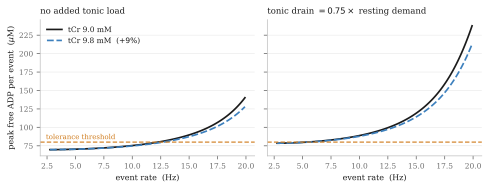

クレアチンがニューロンの発火能を支えるという主張は、メチルフェニデート下よりもアンフェタミン下のほうが弱くなる。強くなるのではない。これは通常の推論が予測するところとは逆である。通常の推論はこう進む。アンフェタミンはドパミン終末をより強く駆動する、強い仕事はより多くの ATP を要する、クレアチンはホスホクレアチンの緩衝容量を拡大する、ゆえにクレアチンの効果は大きくなるはずだ、と。各ステップは個別には擁護可能であり、それでも結論は導かれない。アンフェタミンが付加する負荷は、緩衝系が吸収できる種類の負荷ではないからである。他方で二つの経路はこの議論の影響を受けずに残り、そのうち一つはむしろ補強される。
第一節精神刺激薬の分類が問いを変える理由
メチルフェニデートは純粋なドパミン／ノルアドレナリントランスポーター遮断薬である。それ自体は輸送されず、膜を越えて陽イオンを運ばず、シナプス小胞にも入らず、弱塩基としての作用も持たない。アンフェタミンはドパミントランスポーターと小胞モノアミントランスポーターの双方において基質であり、かつ親油性の弱塩基である。本稿で扱うエネルギーコストはすべてアンフェタミンに固有のものである。
これが重要なのは、クレアチンが脳内で果たすとされる作用のほとんどが細胞エネルギー代謝を経由するからである。二つの精神刺激薬がドパミン終末に構造的に異なる仕方で負荷をかけるのであれば、一方について成り立つクレアチンの主張が自動的に他方へ移ることはない。この区別がクレアチン文献のどこにも引かれていないように見えることが、これを引く価値の一端である。
第二節「発火率」に潜む二つの問い
アンフェタミンは、この語句が通常ひとまとめにしている二つの事柄を解離させる。Bunney と Aghajanian（1978）は、比較的低用量の d-アンフェタミンを静脈内投与すると黒質ドパミン細胞の発火が完全に停止することを見出した。線条体黒質路を破壊した動物では 50% 抑制に 5 倍の用量を要し、高用量でも発火は完全には消失しなかった。したがってこの抑制は、一部は GABA 性のフィードバックループ、一部は D2 自己受容体を介している。Shi ら（2000）はラットへの 1〜2 mg/kg 静脈内投与でこの抑制を再現しており、ベースラインはおよそ 10 秒あたり 44〜48 スパイクであった。
一方、終末からのドパミン放出は増加し、しかも活動電位を必要としない。Sulzer ら（1995）は、ドパミンニューロンの細胞質へアンフェタミンを直接注入するだけでノミフェンシン感受性の放出が生じることを示した。トランスポーターを介した逆輸送はスパイクをまったく必要としないのである。PC12 細胞では小胞あたりの量子的ドパミン放出量が半分以下に低下した。
すなわち、細胞体樹状突起のスパイク発火は低下し、終末からの出力は増加する。クレアチンに支えてほしいのがスパイク発火率であるならば、薬剤のほうがそれを能動的に抑制している。支えてほしいのが負荷下での持続的な伝達物質出力であるならば、その出力はいまや小胞サイクルを迂回する機構によって産生されている。そして小胞サイクルこそ、緩衝系が古典的に保護するとされてきた ATP コストである。
例外、それも小さくない例外
Shi らは、第一の効果の下にもう一つの効果が隠れていることを見出した。ラクロプリドによる D2 遮断下では、アンフェタミンの逆向きの興奮作用が顕在化する。発火は 10 秒あたり 50.8 ± 4.0 から 62.3 ± 3.4 スパイクへ、バースト発火は 9.7 ± 3.1 から 27.3 ± 4.2 へ増加した（22 細胞）。非麻酔下ではこの興奮はさらに大きく、44.8 ± 6.1 から 76.2 ± 8.7 であった。D1 と D2 の併用遮断下でも残存したためドパミン受容体を介したものではなく、プラゾシンがバースト増加を消失させたことから、α1 アドレナリン性である。
臨床的に意味のある読み方はこうである。アンフェタミンを抗精神病薬あるいは D2 部分作動薬と併用している者では、このデータに従えば、他の者が受ける抑制ではなく、実際にドパミンニューロンの発火とバースト発火の増加が生じるはずである。この併用は一般的でありながら、私が探した限り直接検証されていない。ラクロプリドの実験から部分作動薬への外挿であり、部分作動は遮断ではないから、この推論は緩く保持しておきたい。とはいえ、「アンフェタミンが発火率を上げる」がおそらく真である唯一の条件はこれであり、したがってそこでは緩衝系が想定する位相性の負荷がちょうど回復することになる。
第三節アンフェタミンが終末に課すコスト
放出薬に構造的に固有のコストは三つある。
トランスポーターによる輸送は起電性であり、無償ではない。Sonders ら（1997）はヒトドパミントランスポーターを電位固定し、基質輸送時の電荷移動が Na+ 2、Cl− 1、ドパミン 1 という固定化学量論から予測される値より大きいことを測定した。これは共役フラックスに加えて非共役の陽イオンコンダクタンスが存在することを意味する。Erreger ら（2008）は、トランスポーターのターンオーバー速度がアンフェタミンとドパミンで実験誤差の範囲内で同一であることを見出し、10 µM のアンフェタミンで 6.5 ± 0.5 pA のピーク電流が定常状態でピークの約 4 分の 1 へ減衰した。流入した Na+ はすべて汲み出さねばならない。
小胞の対向輸送はプロトンの直接の負債である。小胞モノアミントランスポーターは、陽イオン性モノアミン 1 分子を取り込むごとに 2 個のプロトンを排出し、その駆動力となる勾配はV 型 ATPase が生成している。Freyberg ら（2016）はショウジョウバエのドパミンニューロンで、内腔 pH 5.8 を基準に 0.4 単位のアルカリ化を測定し、アンフェタミンが蛍光小胞マーカーを半減時間 66.6 ± 17.1 秒で脱染色させることを示した。
弱塩基としての分配は正真正銘の無益回路である。中性型のアンフェタミンが小胞膜を拡散して通過し、酸性の内腔でプロトン化され、中性型が再び平衡化する。プロトンは消費され、輸送の仕事は何もなされない。
これらを興味深いものにしている文脈は、Pulido と Ryan（2021）の知見である。静止状態の神経終末はおよそ毎秒 3100 分子の ATP を消費し、そのうち約半分が、V 型 ATPase によるプロトン漏出の補償に費やされている。シナプスの静止時消費の半分はすでにプロトン勾配の維持に投じられており、アンフェタミンはその勾配を二方向から同時に攻撃する。

これを数値に変える計算は公表されておらず、私自身が行える計算は下限にすぎない。アンフェタミンの流入イベントごとに Na+ が 2 個細胞内へ運ばれ、Na+/K+-ATPase が ATP 1 分子あたり 3 個を汲み出すとすれば、下限は取り込まれる分子 1 個あたり約 0.67 ATP となる。流出側がこの勘定を増やすのか一部相殺するのかは、逆輸送のどのモデルを採るかに依存する。この数値が公表されたことがない理由の一つがそこにある。非共役コンダクタンスと、Kahlig ら（2005）が報告したチャネルモードのバーストを考慮すれば、真の値はその数倍になりうる。Robertson、Matthies、Galli による逆輸送の総説（2009）には、Na+ ポンプによる代償や代謝需要の記述がまったくない。アンフェタミンがエネルギー的に高価であるという主張は、機序的な推論であって実測量ではなく、そのように述べられるべきである。
無視できない反対の重り
Graves ら（2020）は、モノアミン酸化酵素がミトコンドリア外膜に係留されており、そのドパミン代謝は細胞質の過酸化水素を増やすのではなく、膜間腔へ電子を供給して電子伝達系を活性化することを示した。10 µM のメタンフェタミンと 100 µM の L-DOPA はミトコンドリアのチオール酸化と ATP 合成を増加させ、モノアミン酸化酵素または ATP 合成酵素を阻害すると反復的な位相性放出が障害された。
したがって、細胞質ドパミンを増やすことは、エネルギー的に一義的な負債ではない。アンフェタミンが ATP 欠損を作り出すと主張するモデルはこの結果を通過せねばならず、誠実な立場は、供給と需要の双方が動くというものである。
第四節実測されているもの、そしてその用量
ブラジル UNESC の一つのグループが、d-アンフェタミンの躁病モデル（典型的には雄性 Wistar ラットへ 2 mg/kg を腹腔内投与、14 日間）において脳のエネルギー代謝酵素を測定している。この問いに直接関わる唯一のエビデンスであり、両薬剤を分けているのは、ただ一つの指標である。
| 指標 | d-アンフェタミン | メチルフェニデート |
|---|---|---|
| 脳クレアチンキナーゼ | 海馬、線条体、皮質で低下（Streck 2008; Moretti 2011） | 10 mg/kg で前頭前皮質、海馬、線条体、大脳皮質において上昇（Scaini 2008） |
| 呼吸鎖複合体 I〜IV | 慢性投与でも単回投与でも低下（Valvassori 2010; Feier 2012） | 成熟ラットで低下、若齢ラットで上昇（Fagundes 2010; Fagundes 2007） |
| クエン酸回路酵素 | 検討されたすべての領域で低下（Valvassori 2013） | 報告なし |
二点を取り出しておきたい。Feier らは 単回 の 2 mg/kg 投与後に複合体 I〜IV の阻害を認めており、しかも用量依存的ではなかった。つまりこれは慢性曝露に固有の現象ではない。そしてメチルフェニデートとの対比は見た目より狭い。成熟ラットでは両薬剤とも呼吸鎖を阻害するため、実際に両者を分けているのはクレアチンキナーゼの変化方向だけであり、メチルフェニデートについてはそれすら年齢依存的である。
用量に関する反論は成り立たない
げっ歯類の躁病モデルに対する通常の退け方は、用量が非現実的に高いというものである。体表面積換算ではこれは誤りである。ラットの 2 mg/kg を標準換算係数 6.2 で割るとヒトで約 0.32 mg/kg、体重 70 kg の成人でおよそ 23 mg の d-アンフェタミン塩基となる。リスデキサンフェタミン 70 mg はおよそ 21 mg の d-アンフェタミン塩基を供給する。これらは同一用量である。
外挿が実際に破綻するのは別の場所であり、その点を正確にしておくほうが mg/kg の議論より重要である。2 mg/kg の腹腔内ボーラス投与はほぼ瞬時のピークを生じるのに対し、リスデキサンフェタミンの設計目的そのものが赤血球内での律速的な酵素加水分解であり、鈍いピークと長く平坦な曲線を与える。モデルの評価項目である多動と常同行動はピーク濃度の現象であり、曲線下面積を合わせてもピークは一致しない。酵素が測定される時点で動物は明白な常同行動下にある。この一連の研究は効果量ではなく変化方向と p 値を報告しているため、公表された記録から大きさを知ることはできない。単一施設、群あたり 6〜15 匹であり、クレアチンキナーゼの所見について独立した再現を私は見つけられなかった。そしてリスデキサンフェタミンそのものについては、クレアチンキナーゼ、ホスホクレアチン、ATP、呼吸鎖複合体のいずれを測定した研究も存在しない。
安心材料に対する反論として、Ricaurte ら（2005）は成体ヒヒに経口アンフェタミンを 1 日 2 回 4 週間投与し、平均血漿濃度 168 ± 25 ng/mL に達した。著者らはこれがADHDの治療を受けている患者の水準と同程度であると述べている。投与終了 2 週間後、線条体ドパミン、トランスポーター結合部位、小胞トランスポーター結合部位はいずれも有意に低下していた。この研究が測定したのは ATP ではなくドパミン系マーカーであり、Advokat の総説（2007）は明示的に結論を保留し、治療域を模した用量で栄養性の樹状突起成長を示す研究もある。それでも、治療域のアンフェタミンをエネルギー的に不活性と切り捨てることを許さない程度には十分である。公平を期すと、ヒト関連濃度における唯一の直接的 ATP 測定は陰性である。Schmidt ら（2010）はヒト神経系細胞株において治療域およびそれ以上の範囲で ATP 含量に有意な影響を認めず、より低い濃度ではアンフェタミンが細胞生存をむしろ促進した。
第五節持続性負荷は緩衝系に合わないかたちである
モデルは意図して小さく作ってある。平衡近傍のクレアチンキナーゼ反応、Michaelis-Menten 型の酸化的 ATP 合成、そしてイベント率が上昇していく需要列である。メチルフェニデート向けに構築した版との違いは三点ある。酸化的フラックスが瞬時ではなく約 2 秒の一次遅れをもって活性化すること、需要をイベント率で離散的に与えられる位相性項と連続的に流れる持続性項へ明示的に分割したこと、そして維持代謝に上乗せする発火非依存性の消費項を新たに導入したことである。
アンカーは次のとおりである。総アデニンヌクレオチド 2.6 mM は、Straub ら（2025）が生理的温度下で遺伝子コード型センサーを用いて直接測定したシナプス前 ATP 濃度 2.5〜2.7 mM に一致する。総クレアチン 9.0 mM、クレアチンキナーゼ平衡定数 166、遊離 ADP の許容閾値 80 µM。持続性の消費項は絶対単位ではなく静止時需要の倍数で表現している。絶対値は一度も測定されておらず、そうでないふりをすることは誤った種類の精密さになるからである。

定常列での分解が機序を明示する。8 Hz の固定列において、クレアチンプールの 9% 増加は ADP のピーク対平均の振れ幅を −0.2% しか変えず、高い持続性負荷下では符号が反転して +1.9% となる。同じ範囲で遊離 ADP の 平均 は 38.8 µM から 86.4 µM へ上昇し、それだけで閾値までの余裕 41 µM をすべて消費してしまう。緩衝系は振れ幅に作用する。平均には作用できない。定常状態の平均は最大酸化速度、その半飽和定数、総需要によって決まり、クレアチンがどれだけ存在するかとは代数的に独立だからである。

結果を端的に述べる
時間的緩衝系は、需要が到来してから供給が追いつくまでの間隙を埋める。したがってその価値は、ミトコンドリアが立ち上がるより速く到来する需要の割合に比例する。アンフェタミンが付加する負荷は持続性、インパルス非依存性、そして持続的である。それはまさに緩衝系が対処できない負荷のかたちであり、同時に、対処できる側、すなわち酸化能の限界価値を押し上げる。
二つの留保は逆向きに働くので、記録しておきたい。このモデルは均一混合を仮定しているため、微小区画化を表現できない。そして微小区画こそクレアチンキナーゼが最も意味を持つはずの場所である。また第二節の α1 性興奮が D2 部分作動薬下で実在するならば、それは真の位相性負荷を付加し、それは緩衝系が実際に助けになる負荷である。この二点は主結果とは反対を向いており、その総和こそが実際に経験されるものである。
第六節それでもクレアチンが働きうる経路
プールサイズに依存しない機序
Dolder ら（2003）は、この問い全体の枠組みを組み替える実験を行った。野生型肝臓には存在しないミトコンドリア型クレアチンキナーゼを活性型で発現させたマウスの肝ミトコンドリアを用い、外因性アデニンヌクレオチドを加えない条件で検討している。ミトコンドリア透過性遷移孔の開口は、クレアチンとシクロクレアチンによって遅延したが、β-グアニジノプロピオン酸では遅延しなかった。論文を支えているのは二つの対照である。マグネシウムを除去して酵素活性を下げると保護は消失し、野生型ミトコンドリアに外からクレアチンキナーゼを加えても保護はまったく生じなかった。
したがって機序は局所的かつ微小区画的である。正しい場所に局在したミトコンドリア型クレアチンキナーゼによって代謝回転を受けたクレアチンが、アデニンヌクレオチドトランスロカーゼと機能的に共役し、局所的な ADP フラックスを駆動して、トランスロカーゼを孔の開口に不利な立体配座に保つ。正しい場所に機能する酵素がなければ、クレアチンは何もしない。組織を負荷することは必要であって十分ではなく、「クレアチン補充は組織クレアチンを上げる、ゆえに神経保護」と進む議論は、この実験が必須と示した段階を飛ばしている。
この経路は第五節の議論に対して中立である。プールサイズにも過渡的緩衝にも依存しないからである。またアンフェタミン負荷下で最も重要になるべき経路でもある。アンフェタミンモデルにおける傷害機序は、ATP 枯渇そのものというよりカルシウム調節異常とミトコンドリア脱分極だからである。Fortalezas ら（2018）はロテノン処理ニューロンにおいて、カルシウム調節異常が活性酸素種の上昇と脱分極のいずれにも先行し、クレアチンがそれを減弱させることを見出した。Cunha ら（2014）は線条体スライスにおける 6-ヒドロキシドパミンに対する保護を報告しており、それは PI3K シグナル依存的であって明示的に抗酸化作用ではなかった。クレアチンもホスホクレアチンも、この毒素の自動酸化を阻止しなかったのである。
なぜとりわけドパミンニューロンなのか
これらの細胞のエネルギー的表現型は特異であり、よく特徴づけられている。単一のラット黒質線条体軸索を再構成すると総長は平均約 0.47 m、範囲は 0.14〜0.78 m である（Matsuda 2009）。ヒトの相当物は 4 m を超え、100 万を上回るシナプスを担い、そのような分枝を活動電位が伝播するエネルギーコストは、分枝の大きさに対して線形ではなくべき乗則でスケールする（Pissadaki と Bolam 2013）。Pacelli ら（2015）は、脆弱な黒質ニューロンが、より脆弱性の低い腹側被蓋野の隣人と比べて、基礎酸化的リン酸化速度が高く、予備能が小さく、軸索ミトコンドリア密度が高く、基礎酸化ストレスが上昇していることを示し、Semaphorin 7A で分枝を縮小させると基礎速度と脆弱性が同時に低下することを示した。Guzman ら（2010）は、自発発火に伴う L 型カルシウム流入そのものが、これらの細胞に固有のミトコンドリア酸化ストレスを生じることを示した。
予備能が小さいという点が鍵を握っている。それはモデルが支配的と述べたパラメータであり、そしてアンフェタミンが最も強く負荷をかける細胞型において、すでに低いのである。
クレアチンキナーゼ系がこれを緩衝しているかどうかは、本質的に一本の論文に懸かっている。Andres ら（2005）は、ラット胎仔中脳の器官型培養において細胞質型とミトコンドリア型のクレアチンキナーゼがともに高発現し、チロシン水酸化酵素陽性細胞と共局在することを見出し、5 mM のクレアチンが細胞密度を 35% 増加させ、MPP+ 下では対照の水準まで回復させることを示した。これは単一の器官型培養研究である。競合する説明も存在する。Hobson ら（2022）は、ドパミンニューロンのタンパク質量の 87% が線条体軸索に存在し、9 種の解糖系酵素のうち 7 種がそこに濃縮されていることを見出したが、クレアチンキナーゼの濃縮については報告していない。
病変モデルは成功し、ヒト試験は失敗した
Matthews ら（1999）は MPTP 投与の 2 週間前から食餌中 1% のクレアチンをマウスに与えた。黒質細胞数は対照 123 ± 4.1、MPTP 後 38 ± 10.6、クレアチン併用 118 ± 6.3 であり、この保護は毒素送達の減少では説明されなかった。ほぼ完全な救済である。
そしてヒト試験である。NET-PD LS-1 は早期パーキンソン病患者 1741 名を 10 g/日またはプラセボに無作為化し、最低 5 年間追跡したが、955 名を対象とする中間解析で無効中止となった。順位和の平均はプラセボ 2360 に対しクレアチン 2414、p = 0.45 で、数値上はプラセボに有利であった（Kieburtz 2015）。CREST-E はハンチントン病患者 553 名を最大 40 g/日に無作為化したが無効中止となり、機能容量の低下はクレアチン 0.82 点/年に対しプラセボ 0.70 点/年で、やはりプラセボに有利であった（Hersch 2017）。
二つの異なる疾患における大規模、長期、十分用量の試験が、いずれも無効中止となり、いずれも点推定値が誤った側にある。これは検出力不足ではなく、全身的な用量設定の失敗でもない。細胞レベルの機序は十分に支持されたまま、臨床的主張はエンドポイントにおいて反証されており、この二つは両立する。最も有力な整合的説明は送達である。経口クレアチンは飽和性のトランスポーターを介して血液脳関門を通過し、筋への負荷は黒質への負荷ではなく、LS-1 の参加者で脳クレアチンを測定された者は一人もいない。次いで、急性複合体 I 中毒は特発性パーキンソン病ではないこと、Matthews は病変前に前投与したのに対し LS-1 は診断から最大 5 年を経た患者を組み入れたこと、そして Dolder の結果に従えば、ミトコンドリア型クレアチンキナーゼ八量体への酸化的傷害が、まさにそれを必要とするニューロンにおいて機序を沈黙させることである。
小胞サイクルよりよい標的
クレアチンキナーゼが持続的な高頻度伝達に必要であるという命題は、中枢シナプスでは検証されていないことが判明した。この酵素を阻害し、連続刺激中のシナプス電流の減衰や小胞サイクルを測定した研究を、私は見つけられなかった。Ryan 研究室自身による神経終末エネルギー代謝の総説には、ホスホクレアチンもクレアチンキナーゼもどこにも登場しない。Harris、Jolivet、Attwell による標準的なシナプスエネルギー収支にも登場しない。方法論的な理由がありそうであり、これは公表された主張ではなく私の推測である。シナプス前の全細胞記録用内液には通例 5〜14 mM のホスホクレアチンナトリウムが含まれており、全細胞記録である限りプールはピペットによって固定され、枯渇しえない。
素朴な物語にとってさらに悪いことに、小胞機能にクレアチンキナーゼ阻害薬を適用した唯一の実験は陰性であった。Xu ら（1996）は、ヨードアセトアミドがシナプス小胞のクレアチンキナーゼ活性を完全に阻害する一方で、ホスホクレアチン刺激性のグルタミン酸取り込みを阻害しないことを見出し、クレアチンキナーゼ非依存性の経路の存在を示した。この論文は日常的に逆の結論の根拠として引用されている。
ヘルド萼の文献が実際に確立していることは、より有用な方向を指している。Lujan ら（2021）は、検討した二つの発達段階のいずれにおいても、小胞の再循環が破綻するより先に活動電位の伝播が破綻することを見出した。ボトルネックは小胞サイクルではなく軸索の Na+ ポンプである。メートル単位の無髄分枝を持つ細胞で、逆輸送によって Na+ 負荷を付加する薬剤の下であれば、私ならそこに注目する。そしてそれは、本稿がいま弱めた緩衝系の議論とは別の議論である。
第七節貯蔵量ではなく流束
クレアチンキナーゼ系に関する最も強い機能喪失のエビデンスは遺伝学的なものであり、それはプールの物語ではなく流束の物語である。Jost ら（2002）は、脳型クレアチンキナーゼを欠損するマウスにおいて、リン NMR による 定常状態の ATP とホスホクレアチンは正常 でありながら、両者間の交換能が見かけ上低下していることを見出し、それが馴化の減弱、空間学習の遅延、発作発現の遅延を伴うことを示した。Streijger ら（2010）は、ペンチレンテトラゾールが野生型マウス全例に発作を誘発したのに対し欠損マウスではごく一部にとどまり、野生型脳波に見られる 4〜6 Hz の律動性活動の連続的な出現が、欠損動物の大半で消失していることを見出した。
この酵素を失うと、貯蔵庫は無傷のまま、高頻度の律動的ネットワーク活動を持続する能力が失われる。クレアチンに発火率への効果があるとすれば、取るべきかたちはこれである。貯蔵庫ではなく代謝回転である。そしてそれは、正しい測定がリン磁化移動法による交換速度であり、静止時のホスホクレアチン濃度は誤った実験であることを意味する。
クレアチントランスポーター欠損症が、これを反対側から補完する。その表現型は一般的なエネルギー不全の表現型ではない。脳卒中様発作も、乳酸クリーゼも、ミオパチーもない。あるのは表出性言語の障害（初語の平均 3.1 歳）、59% のてんかん、85% の行動障害、そして 4 歳時には 85% が軽度〜中等度の知的障害であるのに対し、成人期には 75% が重度に至るという、相対的な進行性の悪化である。これらは高スループットで持続的かつ時間的に精密な処理であり、断眠下の成人において急性クレアチンが助けとなる領域と同じである。
第八節ヒトでクレアチンが何をするのか、いつするのか

機序的な重みを担うのは二つの研究である。Gordji-Nejad ら（2024）は、クロスオーバー試験で 15 名に 21 時間の断眠下で 0.35 g/kg を単回投与した。プラセボ下ではホスホクレアチンと無機リン酸の比が 4.7 ± 1.0% 低下し、細胞内 pH が約 0.03 単位低下したが、クレアチンは双方を阻止した。認知的な改善はほぼ全面的に処理 時間 に現れ、言語 29.1 ± 5.3%、数的能力 24.0 ± 4.9%、論理 16.0 ± 4.0% であった。2026 年に 29 名を対象として低用量で行われた再現研究では、効果量がおよそ半減したものの、欠けていた覚醒度の指標が加わった。精神運動覚醒課題における反応時間の ばらつき が 9.2 ± 3.4% 改善したのである。平均ではなくばらつきであり、これは伝導速度の機序ではなく、脱落と予備能の機序の徴候である。
Turner ら（2015）は 15 名に 20 g/日を 7 日間投与したうえで 90 分間の低酸素曝露を行った。感覚運動皮質のクレアチンは 9.2% 上昇した。プラセボ下では皮質運動興奮性の低下が認知低下と密接に連動し、r = 0.8 であったが、クレアチンはこの関係を消失させ、複雑注意を回復させた。これは、認知への効果が末梢的あるいは動機づけ的な経路ではなく皮質興奮性を介して働くことを示す、ヒトにおける最良のエビデンスである。
陰性の側も同様に明確である。Moriarty ら（2023）はストレスのない若年成人 30 名に 10 または 20 g/日を 6 週間投与し、いずれの領域でも認知の改善を認めなかった（p は 0.59〜0.95）。McMorris ら（2024）は系統的レビューにおいて、補充研究は認知効果の理論的根拠を支持できておらず、今後の研究は脳クレアチン含量を測定しなければならないと結論している。
精神刺激薬に関する測定記録は乏しく矛盾している
Carrey ら（2007）は、未治療のADHD児 13 名において線条体クレアチンが対照より高く、8 週間の精神刺激薬治療後に低下することを見出した。Endres ら（2020）は、唯一の二重盲検プラセボ対照分光試験であり、73 名を対象にクレアチン比ではなく内部水標準に対する絶対定量を用いたが、12 週間後にクレアチンを含むいずれの代謝物にも有意な変化を認めなかった。
ここでは方法論上の指摘を強く述べておきたい。この分野のプロトン分光研究の大半は代謝物をクレアチンで正規化しており、その設計はクレアチン自体の変化に対して構造的に盲目である。グルタミン酸／クレアチン比の 14% の低下は、グルタミン酸の低下とクレアチンの上昇のいずれとも等しく整合する。この問いに答えうるのは絶対定量を行った研究だけであり、それはごく少数である。
アンフェタミンあるいはリスデキサンフェタミンに限れば、ヒトにおいてリンでもプロトンでも、何も存在しない。ヒトで記録された唯一のホスホクレアチン低下はメタンフェタミン使用者においてであり、11 名が完遂した非盲検パイロット試験では 5 g/日を 8 週間投与してホスホクレアチンが測定可能に上昇し、症状も改善した（Hellem 2015）。これはクレアチンが精神刺激薬使用を悪化させないという徴候であって、保護するというエビデンスではない。
第九節二つの訂正
クレアチンは GABAA 部分作動薬ではない。この主張は広く流通している。Meera ら（2025）は天然の小脳顆粒細胞をパッチクランプし、グアニジノ酢酸、β-グアニジノプロピオン酸、および関連する二つのグアニジノ化合物がマイクロモル濃度で δ 選択的な 完全 作動薬であるのに対し、クレアチン自体は 1 mM まで検出可能な応答を示さないことを見出した。この主張はグアニジノ酢酸の文献からの混入と見られる。訂正そのものより価値のある方法論上の帰結がある。実験的にクレアチンを枯渇させる標準的ツールである β-グアニジノプロピオン酸は、これらの受容体に対して EC50 3 µM の完全作動薬であり、したがってこれをクリーンなクレアチン枯渇操作として用いた研究はすべて、持続性抑制によって交絡している。
興奮性への直接的なエビデンスは矛盾しており、どちらの側も決着していない。Royes ら（2008）は、灌流クレアチンが海馬集合スパイク振幅を 50〜60% 増加させ、それが NMDA 依存的で AP-5 によって遮断されることを見出した。Bian ら（2023）は、100 µM のクレアチンが皮質錐体細胞 51 個中 16 個を 抑制 し、基電流（レオベース）を上昇させ誘発スパイクを減少させることを見出したが、受容体は同定されておらず、クリアランス機構も確立されていない。クレアチンはシナプス小胞内に小胞性 GABA のおよそ 19% の濃度で存在し、カルシウム依存的に放出される。これは確かに興味深いが、皮質興奮性へのクレアチンの効果の方向を自信をもって予測する者は、文献から読み取れる以上のことを読み取っている。
第十節実際に問題となる相互作用
それはエネルギー代謝的なものではない。精神刺激薬を服用している読者に最も持ち帰ってほしいのはこの部分である。
Cunha ら（2012）は、マウスにおけるクレアチンの抗うつ様効果がハロペリドール、D1 拮抗薬 SCH23390、D2 拮抗薬スルピリドによって消失することを見出し、無効量のクレアチンが、無効量の D1 作動薬 SKF38393、アポモルヒネ、ブプロピオンのそれぞれと相加的あるいは相乗的であることを見出した。4 桁にわたる用量範囲において、クレアチン単独では自発運動量にまったく影響せず、Allen ら（2010）も食餌中 2% および 4% を 5 週間投与してオープンフィールドや運動機能に差を認めなかった。実際にクレアチンが投与された唯一の躁病モデルにおいて、クレアチンは 抗 躁的であった。
そして、これは私にとって意外だったのだが、クレアチンをアンフェタミンまたはメタンフェタミンと併用投与した研究は、いかなる種でも、いかなる評価項目でも存在しない。検索に現れるアンフェタミン躁病モデルの論文群は、内因性クレアチンキナーゼを アウトカム として測定しているのであって、クレアチンを投与してはいない。これは乏しいのではなく、皆無である。
入手可能なプロファイルが記述しているのは、内因性の賦活作用を伴わずにドパミン性の行動出力の閾値を下げる作用である。それはまさに、げっ歯類では何も生じさせないまま臨床的な躁転を生じさせる薬理である。そして臨床記録はこれと整合している。Roitman ら（2007）は 10 名の非盲検試験に含まれた双極性患者 2 名の双方が軽躁ないし躁へ転じたと報告し、Toniolo ら（2018）は無作為化試験のクレアチン群 17 名中 2 名の躁転を報告した。いずれも第 2 週、いずれもすでにリチウムとクエチアピンを併用しており、プラセボ群には生じなかった。試験で曝露された双極スペクトラム患者およそ 19 名に対して記録された躁転が 4 件、負荷期に集中しており、十分な気分安定薬の併用はそれを防がなかった。これに対し、単極性うつ病における検出力のある陽性試験では、睡眠困難を超える賦活は報告されていない。
放出薬を服用している人に伝えること
用量そのものは懸念ではない。LS-1 は 1741 名に 10 g/日を 5 年間投与して、身体系統別の有害事象に差を認めなかった。再現性のある用量依存的な有害事象は消化器症状だけであり、40 g/日で有意、10 g/日では認められない。懸念は、双極スペクトラムの診断、負荷期、そしてすでに放出を強制することで作用する薬物クラス、という組み合わせに固有のものである。自己判断で調整せず、処方医に相談すべきことである。見落としやすい実務的な注意を一つ。クレアチンは代謝回転を通じて血清クレアチニン測定値を上昇させるが腎リスクは上げないため、補充中はクレアチニンに基づく腎機能推定が信頼できない。代替はシスタチン C である。
第十一節決着をつけるために必要なもの
六つの予測を、識別力の高い順に挙げる。
- 最も鋭いもの。アンフェタミンが付加する負荷はインパルス非依存性であるから、31P-MRS による負荷試験はそのエネルギー代謝的な痕跡を、課題後の回復速度ではなく 静止時 のホスホクレアチンと無機リン酸に見出すはずであり、臨床効果を一致させたメチルフェニデートは逆を示すはずである。ある精神刺激薬の痕跡が静止時ではなく回復に現れるなら、このモデルは誤っている。
- 居心地の悪いもの。アンフェタミン下でのクレアチンの便益は、いかなる速度系の評価項目においても、メチルフェニデート下での同じ便益より小さいはずである。負荷に占める持続性の割合が高いからである。これは私が最も外れてほしい予測である。
- クレアチンは平均反応時間ではなく反応時間のばらつきと最も遅い十分位に作用するはずである。再現研究が実際に動かしたのはばらつきだからである。
- アンフェタミンと併用された D2 部分作動薬は α1 経路を介してバースト発火を付加し、したがって位相性負荷を増やし、したがって緩衝系の仕事を増やすはずである。これは予測 2 と逆を向いており、観察されるのは両者の総和である。
- いかなる効果も、十分な睡眠下より睡眠制限下で大きく、その差は遮断薬下よりアンフェタミン下で広いはずである。条件依存的ストレッサーのパターンが、ヒト文献における唯一の堅牢な所見だからである。
- 機序がプールではなく流束であるから、リン磁化移動法は、静止時ホスホクレアチンが動かない場合でも補充とともに動くはずである。
この問いを前に進めるために最も安価にできることは、実験ですらない。Hobson らは 2022 年にドパミンニューロンの細胞内区画プロテオームを公表している。その軸索画分にクレアチンキナーゼが現れるかどうかは、補足表を開くだけで、この議論全体が依存している酵素がそもそも議論の必要とする場所に存在するのかを決着させる。
これが一つの薬物クラスを超えて重要だと私が考える理由は、「緩衝系を足す」が認知サプリメント文献における一般的な手であり、しかも負荷のかたちを特定したうえで問われることがほとんどないからである。緩衝系は過渡的負荷に対しては価値を持ち、持続的な引き出しに対してはほとんど価値を持たない。どの分子が提案されるにせよ、この問いは生化学に先立つ。そしてそれは、たいてい誰も問わない問いである。
出典
ドパミンニューロンの発火と逆輸送。Bunney BS, Aghajanian GK, Naunyn-Schmiedebergs Arch Pharmacol 304:255, 1978; Shi WX, Pun CL, Zhang XX, et al., J Neurosci 20:3504, 2000; Sulzer D, Chen TK, Lau YY, et al., J Neurosci 15:4102, 1995; Sonders MS, Zhu SJ, Zahniser NR, et al., J Neurosci 17:960, 1997; Erreger K, Grewer C, Javitch JA, Galli A, J Neurosci 28:976, 2008; Kahlig KM, et al., PNAS 102:3495, 2005; Freyberg Z, Sonders MS, Aguilar JI, et al., Nat Commun 7:10652, 2016; Robertson SD, Matthies HJG, Galli A, Mol Neurobiol 39:73, 2009; Graves SM, Xie Z, Stout KA, et al., Nat Neurosci 23:15, 2020.
精神刺激薬の脳エネルギー代謝酵素への影響。Streck EL, Amboni G, Scaini G, et al., Life Sci 82:424, 2008; Moretti M, Valvassori SS, Steckert AV, et al., Pharmacol Biochem Behav 98:304, 2011; Valvassori SS, Rezin GT, Ferreira CL, et al., J Psychiatr Res 44:903, 2010; Feier G, Valvassori SS, Lopes-Borges J, et al., Neurosci Lett 530:75, 2012; Valvassori SS, Calixto KV, Budni J, et al., J Neural Transm 120:1737, 2013; Scaini G, Fagundes AO, Rezin GT, et al., Life Sci 83:795, 2008; Fagundes AO, Scaini G, Santos PM, et al., Neurochem Res 35:405, 2010; Ricaurte GA, Mechan AO, Yuan J, et al., J Pharmacol Exp Ther 315:91, 2005; Advokat C, J Atten Disord 11:8, 2007; Schmidt AJ, Krieg JC, Clement HW, et al., J Psychopharmacol, 2010.
シナプスおよびドパミン系のエネルギー代謝。Pulido C, Ryan TA, Sci Adv 7:eabi9027, 2021; Straub I, Kunstmann L, Baeza-Lehnert F, et al., J Neurochem 169:e70212, 2025; Harris JJ, Jolivet R, Attwell D, Neuron 75:762, 2012; Ashrafi G, Ryan TA, Curr Opin Neurobiol 45:156, 2017; Sobieski C, Fitzpatrick MJ, Mennerick SJ, J Neurosci 37:1888, 2017; Lujan B, Singh M, Singh A, Renden RB, J Neurophysiol 126:976, 2021; Chavan V, Willis J, Walker SK, et al., PLoS One 10:e0125185, 2015; Matsuda W, Furuta T, Nakamura KC, et al., J Neurosci 29:444, 2009; Pissadaki EK, Bolam JP, Front Comput Neurosci 7:13, 2013; Pacelli C, Giguère N, Bourque MJ, et al., Curr Biol 25:2349, 2015; Guzman JN, Sanchez-Padilla J, Wokosin D, et al., Nature 468:696, 2010; Hobson BD, Choi SJ, Mosharov EV, et al., eLife 11:e70921, 2022.
クレアチンキナーゼの機序と神経保護。Dolder M, Walzel B, Speer O, et al., J Biol Chem 278:17760, 2003; Matthews RT, Ferrante RJ, Klivenyi P, et al., Exp Neurol 157:142, 1999; Andres RH, Ducray AD, Pérez-Bouza A, et al., Cell Transplant 14:537, 2005; Cunha MP, Martín-de-Saavedra MD, Romero A, et al., ASN Neuro 6, 2014; Fortalezas S, Marques-da-Silva D, Gutierrez-Merino C, Neurotox Res 34:717, 2018; Xu C, Klunk WE, Kanfer JN, et al., J Biol Chem 271:13435, 1996; Jost CR, Van Der Zee CE, In 't Zandt HJ, et al., Eur J Neurosci 15:1692, 2002; Streijger F, Scheenen WJ, van Luijtelaar G, et al., Epilepsia 51:79, 2010; Kieburtz K, Tilley BC, Elm JJ, et al., JAMA 313:584, 2015; Hersch SM, Schifitto G, Oakes D, et al., Neurology 89:594, 2017; Mercimek-Andrews S, Salomons GS, GeneReviews, 2025 改訂.
ヒトの認知、興奮性、気分。Gordji-Nejad A, Matusch A, Kleedörfer S, et al., Sci Rep 14:4937, 2024; Gordji-Nejad A, Matusch A, Hengstler L, et al., Nutrients 18:1192, 2026; Turner CE, Byblow WD, Gant N, J Neurosci 35:1773, 2015; Watanabe A, Kato N, Kato T, Neurosci Res 42:279, 2002; McMorris T, Harris RC, Howard AN, et al., Physiol Behav 90:21, 2007; Moriarty T, Bourbeau K, Dorman K, et al., Brain Sci 13:1276, 2023; Xu C, Bi S, Zhang W, Luo L, Front Nutr 11:1424972, 2024; McMorris T, Hale B, Pine BS, Williams T, Behav Brain Res 460:114982, 2024; Carrey NJ, MacMaster FP, Gaudet L, Schmidt MH, J Child Adolesc Psychopharmacol 17:11, 2007; Endres D, Maier S, Tebartz van Elst L, et al., J Clin Med 9:2601, 2020; Hellem TL, Sung YH, Shi XF, et al., J Dual Diagn 11:189, 2015; Cunha MP, Machado DG, Capra JC, et al., J Psychopharmacol 26:1489, 2012; Allen PJ, D'Anci KE, Kanarek RB, Renshaw PF, Neuropsychopharmacology 35:534, 2010; Roitman S, Green T, Osher Y, et al., Bipolar Disord 9:754, 2007; Toniolo RA, Silva M, Fernandes FBF, et al., J Neural Transm 125:247, 2018; Lyoo IK, Yoon S, Kim TS, et al., Am J Psychiatry 169:937, 2012; Meera P, Uusi-Oukari M, Wallner M, Lipshutz GS, BMC Neurosci 27:3, 2025; Royes LFF, et al., Neurochem Int 53:33, 2008; Bian X, Zhu J, Jia X, et al., eLife 12:RP89317, 2023; Kabiri Naeini E, Eskandari M, Mortazavi M, et al., BMC Nephrol 26:622, 2025.
検証したものと、しなかったもの。上記の論文の大半は、出版社のページまたは信頼できる抄録レコードから読んでいる。いくつかは私に利用可能ないずれの経路からも開くことができず、二次引用となっている。それらの具体的な数値は他より慎重に扱うべきである。すなわち、Streck 2008（投与プロトコルは当該論文で確認した数値ではなくグループの標準であり、しかも中心的なクレアチンキナーゼの主張を担っている）、Kahlig 2005、Ricaurte 2005 の低下率、Pacelli 2015 の酸素消費とミトコンドリア密度の数値、アンフェタミン類投与後の線条体 ATP を直接測定した唯一の研究である Chan 1994、そしてクレアチンの機序に対する標準的な懐疑的対抗論である Brustovetsky 2001 である。本稿の四つの議論は公表された知見ではなく私自身のものであり、本文中にその旨を記している。Na+ と ATP の下限計算、体表面積による用量換算、クレアチンキナーゼの問いが検証不足である理由としてのピペット説明、そしてラクロプリドの実験から D2 部分作動薬への推論である。
範囲。速度論モデル、その図、パラメータスイープは本稿のために作成し実行したものであり、基礎となる生理学的パラメータは引用した実測値から取っている。本稿は査読を受けておらず、オリジナルのヒト被験者データは収集していない。本ページは臨床的助言ではなくリサーチノートである。